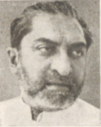

اشوکا مہتا

مکرر وکھ:
وزارتھ پٹرولیم, کیبنیٹ وزیر
۱۹۶۷ - ۱۹۶۸
وزارتھ کیمیکل اور کھاد, کیبنیٹ وزیر
۱۹۶۷ - ۱۹۶۸
وزارتھ منصوبہ کمپنی, کیبنیٹ وزیر
۱۹۶۶ - ۱۹۶۷
گڈنیوکت اندرا گاندھی منسٹری
وزارتھ منصوبہ کمپنی
کیبنیٹ وزیر
وزارتھ میبودی
کیبنیٹ وزیر
وزارتھ کیمیکل اور کھاد
کیبنیٹ وزیر
وزارتھ پٹرولیم
کیبنیٹ وزیر
وزارتھ کیمیکل اور کھاد
کیبنیٹ وزیر
وزارتھ پٹرولیم
کیبنیٹ وزیر
وزارتھ میبودی
کیبنیٹ وزیر
گڈنیوکت اندرا گاندھی منسٹری

1_Upload_2010.pdf
1_Upload_2864.pdf

اندرا گاندھی
o-Indira_Gandhi.htmlوزیر آزام
۲۴ جنؤری ۱۹۶۶ - ۱۸ مارٕچ ۱۹۷۱
اشوکا مہتا
o-Asoka_Mehta.htmlکیبنیٹ وزیر
۲۴ جنؤری ۱۹۶۶ - ۵ ستمبر ۱۹۶۷
جمنی پھرمان
1_Upload_2010.pdf[12]۲۴ جنؤری ۱۹۶۶کونسل وزارتی1_Upload_2874.pdf[12]۳۱ جنؤری ۱۹۶۶کونسل وزارتی1_Upload_2875.pdf[12]۱۷ فرؤری ۱۹۶۶کونسل وزارتی1_Upload_2889.pdf[1]۲۶ مارٕچ ۱۹۶۶مہکم تبدلی1_Upload_2012.pdf[8]۱۳ مارٕچ ۱۹۶۷کونسل وزارتی1_Upload_2853.pdf[8]۱۳ مارٕچ ۱۹۶۷کونسل وزارتی1_Upload_2855.pdf[7]۱۱ اپریل ۱۹۶۷کونسل وزارتی1_Upload_2864.pdf[0]۵ ستمبر ۱۹۶۷مہکم تبدلی